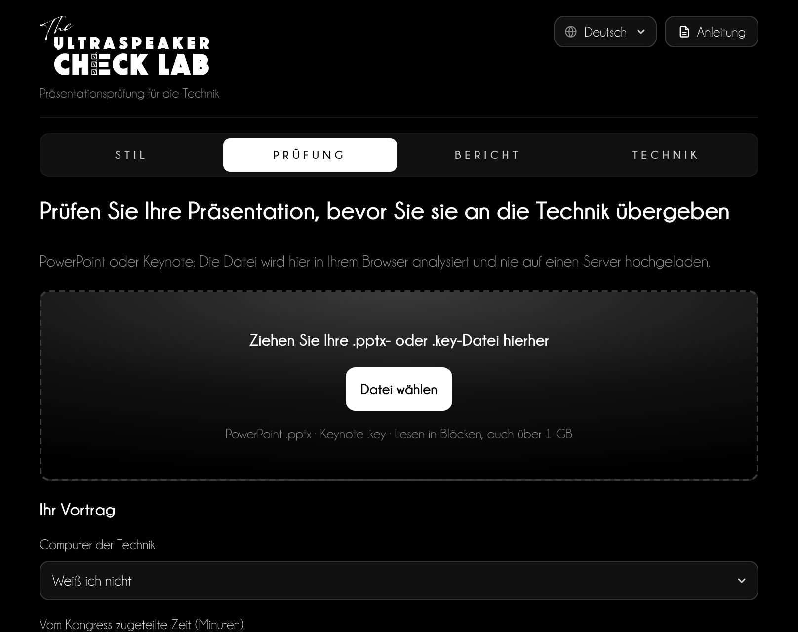
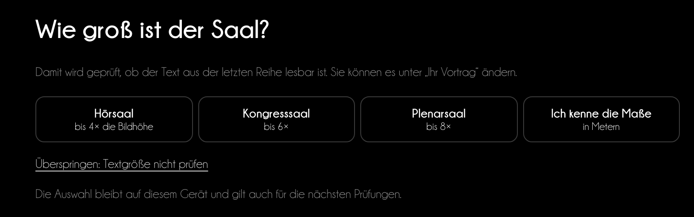
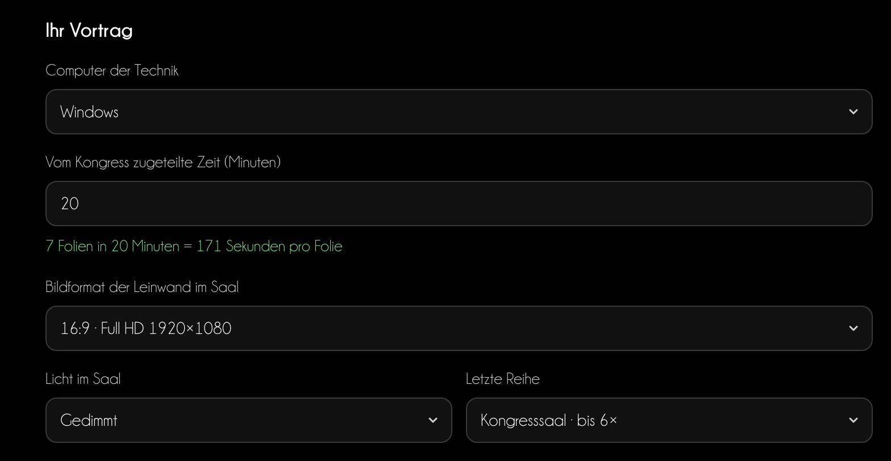
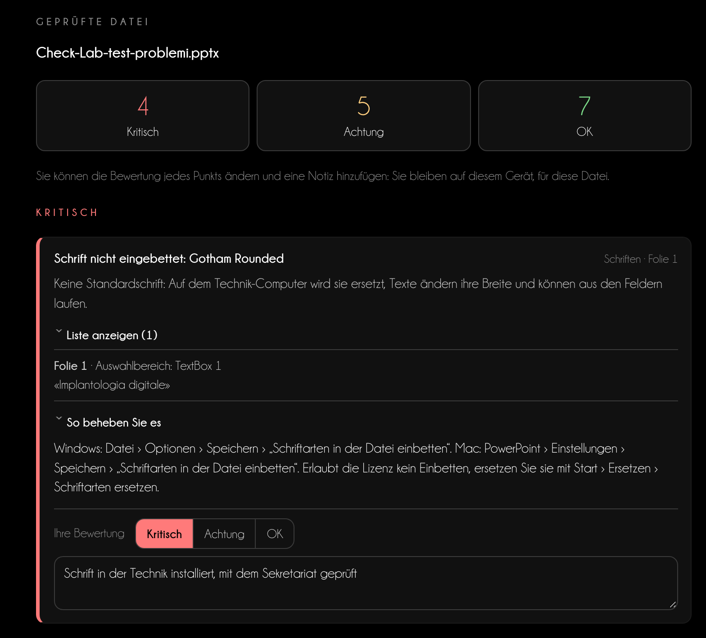
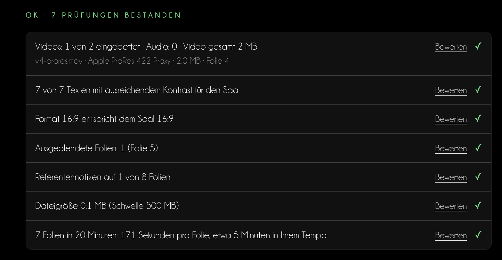
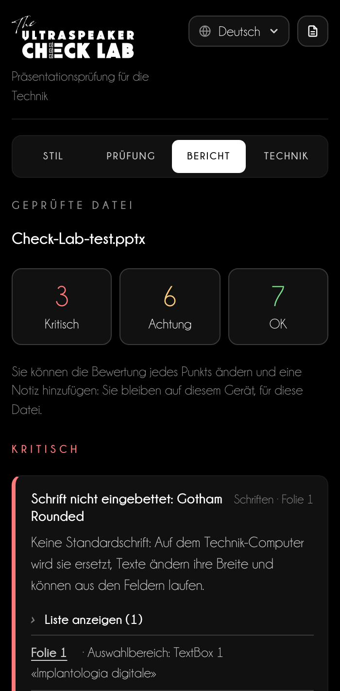
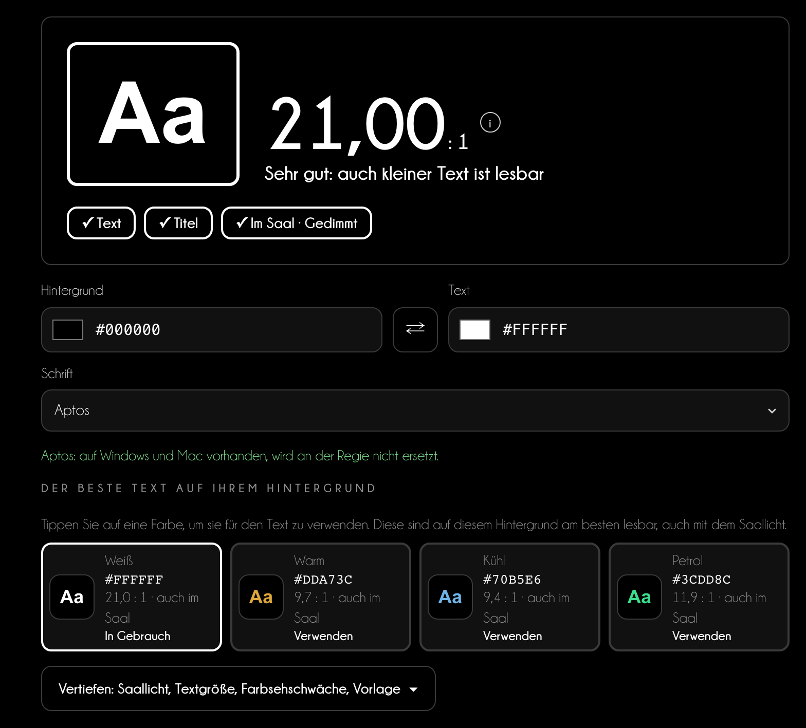
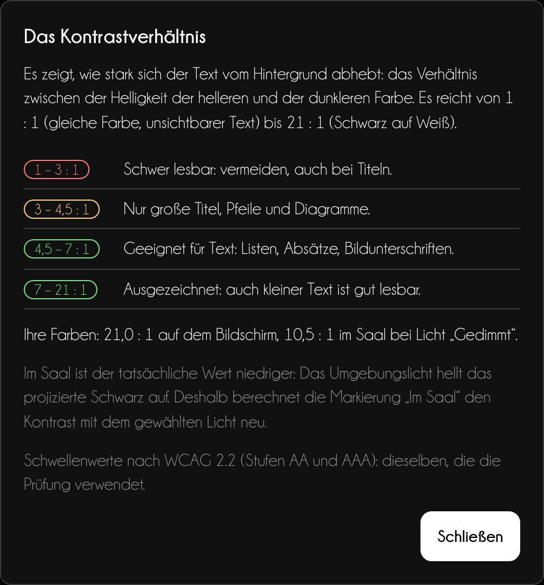
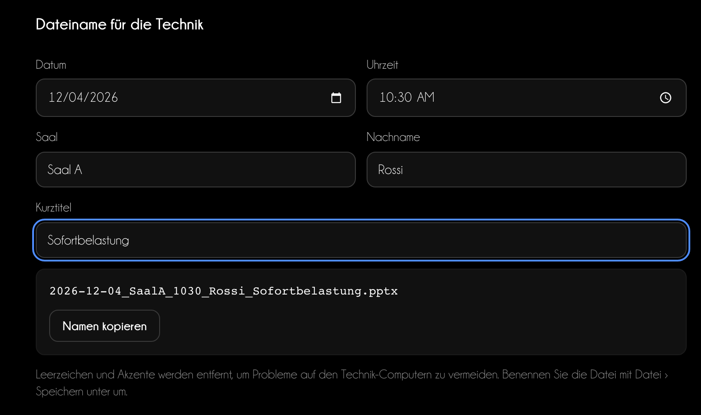
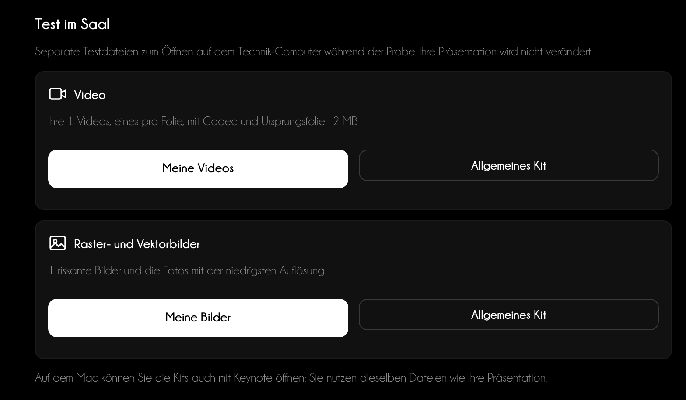

Bedienungsanleitung
Ihre Präsentation bereit
für die Technik
Prüfen Sie Schriften, Videos, Bilder, Lesbarkeit, Format und Zeit einer PowerPoint- oder Keynote-Präsentation, bevor Sie sie auf dem Kongress übergeben.
Bedienungsanleitung
Prüfen Sie Schriften, Videos, Bilder, Lesbarkeit, Format und Zeit einer PowerPoint- oder Keynote-Präsentation, bevor Sie sie auf dem Kongress übergeben.
Inhalt
Check Lab liest Ihre Präsentation und sagt Ihnen, was auf dem Technik-Computer nicht funktionieren könnte: eine fehlende Schrift, ein Video, das nicht startet, ein Text, der aus der letzten Reihe nicht lesbar ist.
Im Browser
niki977.github.io/ultraspeaker-check-lab. Ziehen Sie eine .pptx- (PowerPoint) oder .key-Datei (Keynote) hinein. Funktioniert auf Computer, Tablet und Telefon.
In PowerPoint
Registerkarte Start → Gruppe The Ultraspeaker → Check Lab. Der Aufgabenbereich prüft die geöffnete Präsentation und führt mit „Zu Folie“ zur Folie mit dem Problem.
Demnächst
Der PowerPoint-Aufgabenbereich wird gerade getestet und ist bald verfügbar. Nutzen Sie bis dahin die Webversion: Sie führt dieselben Prüfungen durch.
| Was geprüft wird | Beispiele |
|---|---|
| Schriften | nicht eingebettet, nur Windows oder nur Mac |
| Video und Audio | verknüpft statt eingebettet, Formate, die nicht starten, 4K |
| Bilder | niedrige Auflösung, schwere Dateien, EPS, CMYK, HEIC |
| Lesbarkeit | Kontrast zum Hintergrund und auf Fotos, Größe für die letzte Reihe, Diagramme bei Rot-Grün-Schwäche |
| Format und Datei | Bildformat, leere oder ausgeblendete Folien, Links, Dateigröße |
| Zeit | Sekunden pro Folie im Vergleich zur zugeteilten Zeit |
Datenschutz
Die Datei wird nur auf Ihrem Computer gelesen und nie auf einen Server hochgeladen. Auf dem Gerät bleiben Sprache, Vortragseinstellungen, Checkliste und Ihre Bewertungen des Berichts.
Vier Tabs oben. Sie beginnen mit Prüfung; Stil nutzen Sie vor dem Erstellen der Folien, Technik am Tag des Vortrags.

1234Es braucht nur eine Minute und die Präsentationsdatei. Je mehr Sie über den Vortrag angeben, desto genauer ist der Bericht.


Letzte Reihe
Hörsaal, Kongresssaal oder Plenarsaal: Die Mindestgröße des Texts hängt vom Abstand der letzten Reihe ab. Kennen Sie die Maße, wählen Sie „Ich kenne die Maße“ und geben Sie Bildhöhe und Abstand in Metern ein.
Der Bericht vergibt keine Note: Vortragende müssen oft Kompromisse eingehen, und Sie entscheiden, wie schwer jedes Problem wiegt.

123456Ihre Bewertungen bleiben auf diesem Gerät, verknüpft mit der Datei: Wenn Sie die Präsentation korrigieren und erneut prüfen, finden Sie sie wieder. Meine Bewertungen löschen löscht sie. Mit Als PDF exportieren oder Bericht kopieren geben Sie den Bericht an das Sekretariat oder Ihre Assistenz weiter.


Im PowerPoint-Aufgabenbereich ist jede Folie im Bericht anklickbar und führt direkt zur Stelle, die zu korrigieren ist.
Die häufigsten Hinweise und die schnellste Lösung. Der vollständige Rat steht immer unter „So beheben Sie es“.
| Hinweis | Was tun |
|---|---|
| Schrift nicht eingebettet | PowerPoint: Datei › Optionen › Speichern › „Schriftarten in der Datei einbetten“. Erlaubt die Lizenz das nicht, ersetzen Sie die Schrift. |
| Verknüpftes oder Online-Video | Fügen Sie es vom Computer ein (Einfügen › Video › Dieses Gerät): Die Datei muss in der Präsentation liegen. |
| Video als .mov, ProRes, WMV | Wandeln Sie es in MP4 H.264 um, zum Beispiel mit HandBrake, und fügen Sie es erneut ein. |
| Bilder mit niedriger Auflösung | Ersetzen Sie sie durch das Original, mindestens in der angegebenen Breite in Pixeln. |
| Schwer lesbarer Text | Verwenden Sie die vorgeschlagene Farbe; im Aufgabenbereich drücken Sie „Anwenden“. |
| Text auf Foto | Legen Sie ein halbtransparentes Band hinter den Text oder verschieben Sie den Text auf eine gleichmäßige Fläche. |
| Text zu klein | Vergrößern Sie ihn oder verteilen Sie den Inhalt auf zwei Folien. |
| Schwere Datei | Bildformat › Bilder komprimieren, 220 ppi, zugeschnittene Bereiche löschen. |
Wählen Sie vor dem Erstellen der Folien Hintergrund, Textfarbe und Schrift: Sie sehen sofort, ob sie im Saal lesbar sind.

12345
| Verhältnis | Verwendung |
|---|---|
| unter 3 : 1 | schwer lesbar, vermeiden |
| ab 3 : 1 | nur große Titel, Pfeile, Diagramme |
| ab 4,5 : 1 | normaler Text, Listen, Bildunterschriften |
| ab 7 : 1 | ausgezeichnet, auch kleiner Text |
Heruntergeladene Schriften
Prüfen Sie vor der Verwendung einer Schrift von Dafont oder einer anderen Website die Lizenz: Viele sind „nur für den privaten Gebrauch“. Zum Einbetten in PowerPoint muss die Lizenz dies erlauben.
Der Bereich Technik bereitet die Übergabe vor: den Dateinamen, die Checkliste des Tages und die Testdateien für den Saal.


Bilder-Kit
Auf der SVG-Folie muss der Bildtitel „SVG“ lauten. Lesen Sie „PNG“, zeigt dieser Computer den Vektor nicht an und verwendet die Ersatzvorschau.
Check Lab findet die Probleme der Datei. Diese drei Gewohnheiten verhindern die im Saal.
Am Vortag abgeben
Senden Sie die Datei mindestens 24 Stunden vorher an das Sekretariat, im Namensformat der Technik, und bringen Sie einen USB-Stick mit der Präsentation und einem Ersatz-PDF mit.
30 Minuten vorher im Saal testen
Öffnen Sie das Kit „Test im Saal“ auf dem Technik-Computer: In zwei Minuten wissen Sie, ob Video, Audio und Bilder funktionieren.
Für die letzte Reihe schreiben
In einem Kongresssaal mit 16:9-Leinwand brauchen Sie in PowerPoint etwa 32 pt. Passt ein Text nicht, verteilen Sie ihn auf zwei Folien, statt ihn zu verkleinern.
Support
Schreiben Sie an info@theultraspeaker.com mit Computer, PowerPoint-Version oder Browser und dem, was auf dem Bildschirm erscheint. Die Präsentation müssen Sie nicht senden.

Knowledge is not enough.
From expert to Ultraspeaker.
theultraspeaker.com · info@theultraspeaker.com